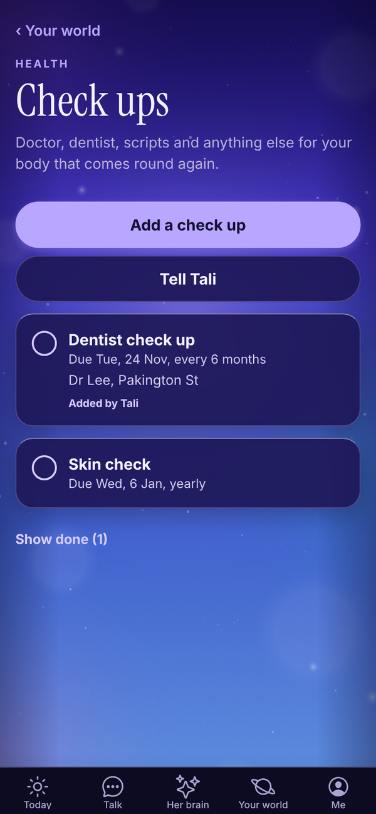
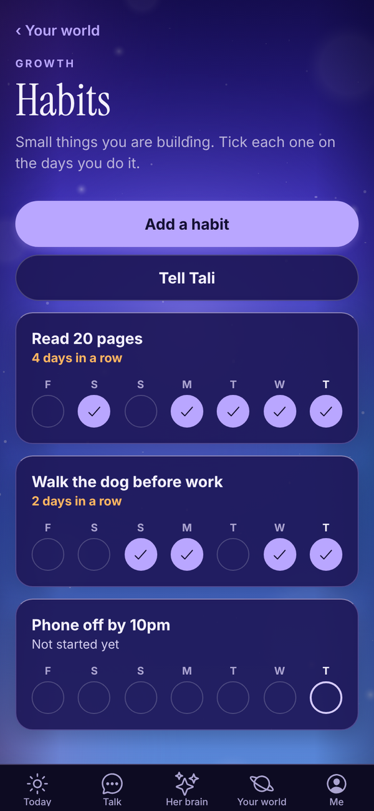

Tali HQ guide
Your lists
To do, check ups, life admin, home jobs, habits, learning, wins, someday and ideas, kept by Tali when you tell her or typed in yourself.
Your lists are the small things that run a life: what's on your plate, the dentist, the car rego, the back gate, the habit you're building, the trip you want to take one day. Tell Tali in Talk and she files it on the right list, or add it yourself. Lists are on every plan and use no extra credits. Free
Each list lives in its part of Your world. See Your world.


The nine lists#
| List | Where it lives | What it's for | Tell Tali |
|---|---|---|---|
| To do | Work | What is on your plate | "Add to my to do: send the quote to Mia by Friday." |
| Check ups | Health | Doctor, dentist, scripts and anything for your body that comes round again | "Dentist every 6 months, next one in March." |
| Life admin | Home and money | Rego, insurance, renewals, warranties | "Car rego is due 29 November, every year." |
| Home | Home and money | Jobs around the house and who to call | "The back gate needs fixing. Dave the handyman did it last time." |
| Habits | Growth | Small things you are building | "I want to read 20 pages a day." |
| Learning | Growth | What you are reading, watching or studying | "I am reading Atomic Habits." |
| Wins | Growth | The good stuff, kept so you can look back | "Win: signed my biggest client yet." |
| Someday | Growth | Trips, dreams and things you want to do one day | "Someday I want to take the kids to Japan." |
| Ideas | Your words | Half thoughts she keeps warm for you | "Idea: a weekend workshop for new mums." |
When Tali adds or ticks something, a Saved to your lists pill shows under her reply. Tap it to open the list. Items she added say Added by Tali.
Add something yourself#
- Open the list from Your world.
- Tap the add button at the top, for example Add a check up or Add a habit.
- Type what it is.
- On To do, Check ups, Life admin and Home, pick when it's due: Today, Tomorrow, Next week, In a month or No date. Or type a date under Or a date, like "29 Nov" or "29/11".
- On Check ups and Life admin, pick how often it Comes round: Once, Monthly, Every 3 months, Every 6 months, Yearly or Every 2 years.
- Add Notes (optional), like a policy number or who you called last time.
- Tap Save.
Tell Tali on any list opens Talk with a line ready to finish. On Learning, Tali's library opens her books.
Tick things off#
- Tap the circle beside an item to tick it. On Learning it reads Finished, on Someday Did it, and on Ideas Used it.
- Something that comes round again moves its date on when you tick it. Tick the dentist done and the next one lands six months later.
- Ticked items move to the bottom. Tap Show done to see them, and tap one to put it back.
- Anything due today or overdue is in orange, and dated items also show on Dates that matter.
To change or delete an item, tap it, change it and tap Save, or tap Delete, then Tap again to delete.
Habits#
Habits work by the day. Tap the circle on the days you do it. Each habit shows the last week as a row of days, with today marked, and your streak, like "4 days in a row". Tell Tali "I read my 20 pages today" and she ticks it for you.
The Growth part of Your world shows how many of your habits are done today.
Wins#
Wins don't get ticked. They're kept with the date, so you can scroll back through the good stuff on a rough day. The Growth part of Your world counts your wins this month.
Questions#
Do lists cost credits?
No. Adding and ticking things yourself is free on every plan. Telling Tali in Talk uses that one message, with nothing extra for the list.
I ticked a check up and its date changed.
That's because it comes round again. Ticking it moves it on by however often it repeats. To stop that, edit it and set Comes round to Once.
Can Tali remind me before something is due?
Dated items show on Today under Due today on the day, and on Dates that matter beforehand. For a nudge at a set time, ask her: "remind me to book the rego on the 20th".
Can I make my own list?
Not yet. The nine lists above are the ones available. For anything else, use Notes.